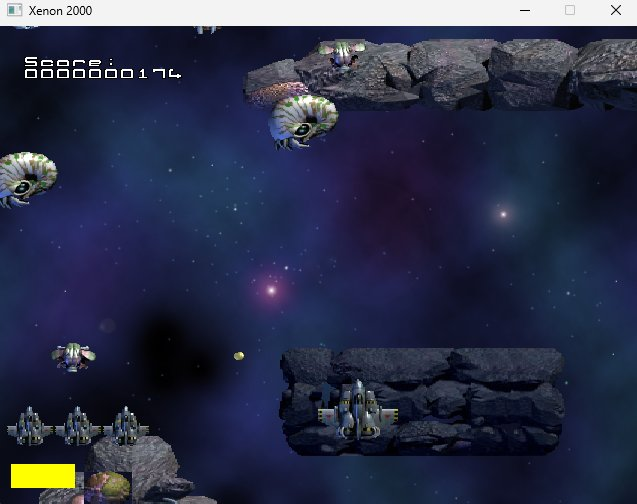
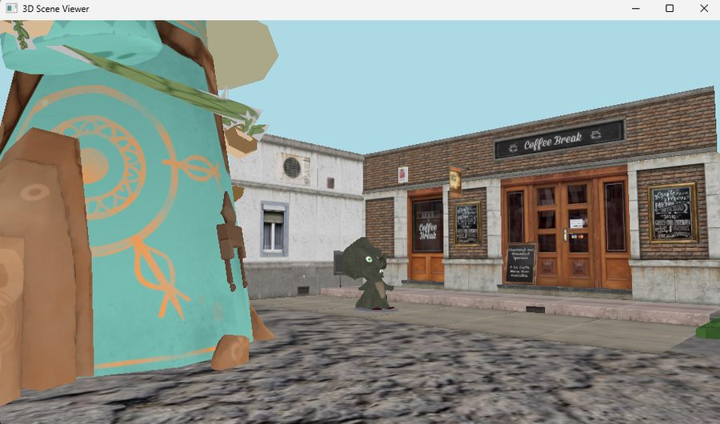

Engine & Graphics · Personal Project
Most developers get rendering and physics from an existing engine. I wanted to know what's actually happening underneath, so I built both from scratch, twice.


Two iterations. The first version used SDL2 to handle rendering, which meant relying on SDL's own 2D draw calls. The second was a full rewrite: I dropped SDL's renderer entirely and moved to raw OpenGL, loading functions through glad and handling math through GLM, managing every VAO, VBO, and shader directly instead of letting a library abstract it away.
Physics runs on Box2D 3.0, using its newer handle-based API rather than the older pointer-based one. Tuned to a fixed 120Hz timestep with 20 solver substeps, with separate listeners for sensor overlaps and solid contacts, since a trigger zone and a wall need to behave very differently.
Alongside the engine, I wrote a full Wavefront OBJ parser from scratch, no external library, handling vertices, texture coordinates, normals, and material data straight from the file format. That feeds a small 3D scene viewer that renders several real models, including a full PBR-style material setup (diffuse, normal, roughness, and ambient occlusion maps) and a converted Half-Life map.